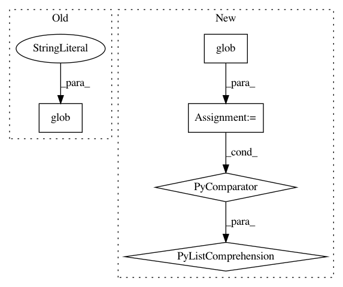

75a815a236dde2780bd4b09805dd7a0f5fd2d664,setup.py,,,#,17
Before Change
"mvpa.support"
],
data_files = [("mvpa/data", ["mvpa/data"])],
scripts = glob( "bin/*" ),
ext_modules = ext_modules
)
After Change
[f for f in glob(os.path.join("mvpa", "data", "*"))
if os.path.isfile(f)]),
("mvpa/data/bv",
[f for f in glob(os.path.join("mvpa", "data", "bv", "*"))
if os.path.isfile(f)])],
scripts = glob(os.path.join("bin", "*")),
ext_modules = ext_modules
)
In pattern: SUPERPATTERN
Frequency: 3
Non-data size: 5
Instances
Project Name: PyMVPA/PyMVPA
Commit Name: 75a815a236dde2780bd4b09805dd7a0f5fd2d664
Time: 2009-01-27
Author: michael.hanke@gmail.com
File Name: setup.py
Class Name:
Method Name:
Project Name: analysiscenter/batchflow
Commit Name: 05cddc81531e62b41f328a69d292b723aa8df6df
Time: 2019-08-05
Author: Tsimfer.SA@gazprom-neft.ru
File Name: batchflow/tests/notebooks_test.py
Class Name:
Method Name:
Project Name: mseitzer/pytorch-fid
Commit Name: 2313fbdad72507c0af7daaf43d1887fc95453762
Time: 2020-11-30
Author: 16725193+mseitzer@users.noreply.github.com
File Name: src/pytorch_fid/fid_score.py
Class Name:
Method Name: _compute_statistics_of_path